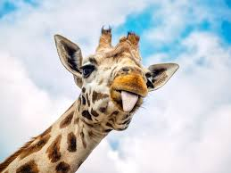

Description
Giraffes are the tallest living land animals, standing at over 18 ft. tall. They have long necks and legs, which allow them to browse on tall trees and branches for food. Giraffes are a herbivore species. The animal's most common forms of nutrition are leaves, twigs, and berries. Giraffes live on the plains of eastern Africa and have a light brown coat with reddish brown spots. They are known for their keen sense of smell and their ability to keep an eye on predators like lions and hyenas.
